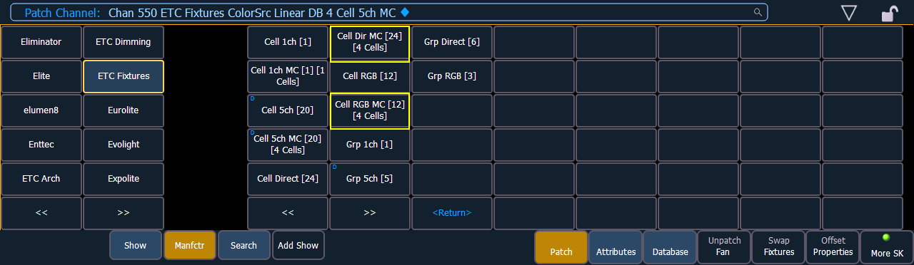
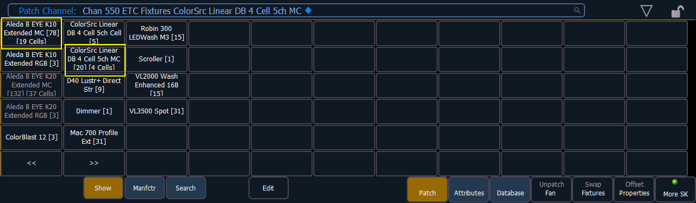
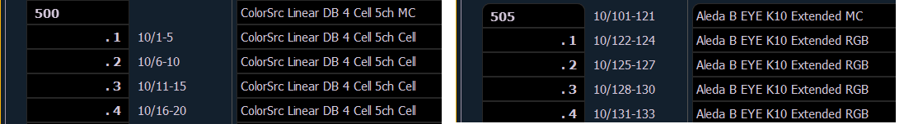
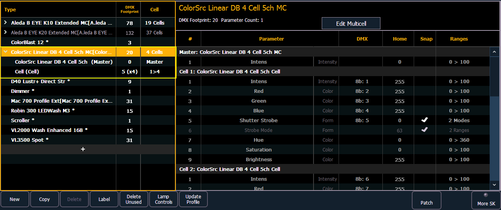

Fixtures that have multiple same-type parameters can have a multicell profile assigned to them. The process for patching multicell fixtures is similar to patching moving lights. There are a few differences that are important to understand though.
Note: It is recommended that when patching multicell fixtures that you work in patch by channel mode. See Patching By Channel .
After you have entered the channel number, click {Type}. You will then select a device type from the fixture library.
Fixtures that have multicell functionality will be listed with a MC in their mode description in the device list, and in the {Show} list.
Note: When using {Search}, the number of cells for a multicell fixture will also be displayed.


When these devices are patched, they will patch a master channel with a whole number for a channel number and the appropriate number of additional cells, which will have point numbers for their channel numbers.

Note: If the master channel has only a virtual intensity over the cells, an address will not be displayed, as that is a virtual parameter.
In the fixture editor, you can view and edit the personality for your multicell fixture. For creating a new multicell fixture, see Creating Multicell Fixtures .
On the left of the fixture editor, you can see the fixture name, overall DMX footprint and number of cells. Click on the caret to see the DMX footprint for the master and the cells. The cells will be grouped with their profile(s).

On the right, you can see the full personality of the selected multicell fixture. If you have the whole fixture selected, you will be able to see all of the parameters for each cell and the master but changes cannot be made here.
See Editing Multicell Fixtures for more information.